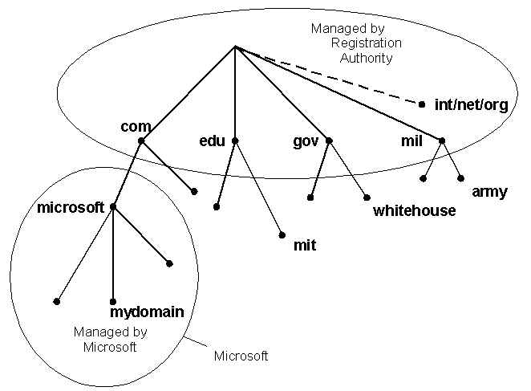

UDP's main purpose is to abstract network traffic in the form of datagrams. A datagram comprises one single "unit" of binary data; the first eight (8) bytes of a datagram contain the header information and the remaining bytes contain the data itself.
UDP Headers
The UDP header consists of four (4) fields of two bytes each:
| Source Port | Destination Port |
| length | checksum |
source port number
destination port number
datagram size
checksum
UDP port numbers allow different applications to maintain their own "channels"
for data; both UDP and TCP use this mechanism to support multiple applications
sending and receiving data concurrently. The sending application (that could be
a client or a server) sends UDP datagrams through the source port, and the
recipient of the packet accepts this datagram through the destination port. Some
applications use static port numbers that are reserved for or registered to the
application. Other applications use dynamic (unregistered) port numbers. Because
the UDP port headers are two bytes long, valid port numbers range from 0 to
65535; by convention, values above 49151 represent dynamic ports.
The datagram size is a simple count of the number of bytes contained in the header and data sections . Because the header length is a fixed size, this field essentially refers to the length of the variable-sized data portion (sometimes called the payload). The maximum size of a datagram varies depending on the operating environment. With a two-byte size field, the theoretical maximum size is 65535 bytes. However, some implementations of UDP restrict the datagram to a smaller number -- sometimes as low as 8192 bytes.
UDP checksums work as a safety feature. The checksum value represents an encoding of the datagram data that is calculated first by the sender and later by the receiver. Should an individual datagram be tampered with (due to a hacker) or get corrupted during transmission (due to line noise, for example), the calculations of the sender and receiver will not match, and the UDP protocol will detect this error. The algorithm is not fool-proof, but it is effective in many cases. In UDP, check summing is optional -- turning it off squeezes a little extra performance from the system -- as opposed to TCP where checksums are mandatory. It should be remembered that check summing is optional only for the sender, not the receiver. If the sender has used checksum then it is mandatory for the receiver to do so.
Usage of the Checksum in UDP is optional. In case the sender does not use it, it sets the checksum field to all 0's. Now if the sender computes the checksum then the recipient must also compute the checksum an set the field accordingly. If the checksum is calculated and turns out to be all 1's then the sender sends all 1's instead of all 0's. This is since in the algorithm for checksum computation used by UDP, a checksum of all 1's if equivalent to a checksum of all 0's. Now the checksum field is unambiguous for the recipient, if it is all 0's then checksum has not been used, in any other case the checksum has to be computed.
There is also another motivation for DNS. All the related information about a particular network (generally maintained by an organization, firm or university) should be available at one place. The organization should have complete control over what it includes in its network and how does it "organize" its network. Meanwhile, all this information should be available transparently to the outside world.
Conceptually, the internet is divide into several hundred top level domains where each domain covers many hosts. Each domain is partitioned in subdomains which may be further partitioned into subsubdomains and so on... So the domain space is partitioned in a tree like structure as shown below. It should be noted that this tree hierarchy has nothing in common with the IP address hierarchy or organization.
The internet uses a hierarchical tree structure of Domain Name Servers for IP address resolution of a host name.

The top level domains are either generic or names of countries. eg of generic top level domains are .edu .mil .gov .org .net .com .int etc. For countries we have one entry for each country as defined in ISO3166. eg. .in (India) .uk (United Kingdom).
The leaf nodes of this tree are target machines. Obviously we would have to ensure that the names in a row in a subdomain are unique. The max length of any name between two dots can be 63 characters. The absolute address should not be more than 255 characters. Domain names are case insensitive. Also in a name only letters, digits and hyphen are allowed. For eg. www.iitk.ac.in is a domain name corresponding to a machine named www under the subsubdomain iitk.ac.in.
Resource Records:
Every domain whether it is a single host or a top level domain can have
a set of resource records associated with it. Whenever a resolver (this will be
explained later) gives the domain name to DNS it gets the resource record
associated with it. So DNS can be looked upon as a service which maps domain
names to resource records. Each resource record has five fields and looks as
below:
|
Domain Name |
Class |
Type |
Time to Live |
Value |